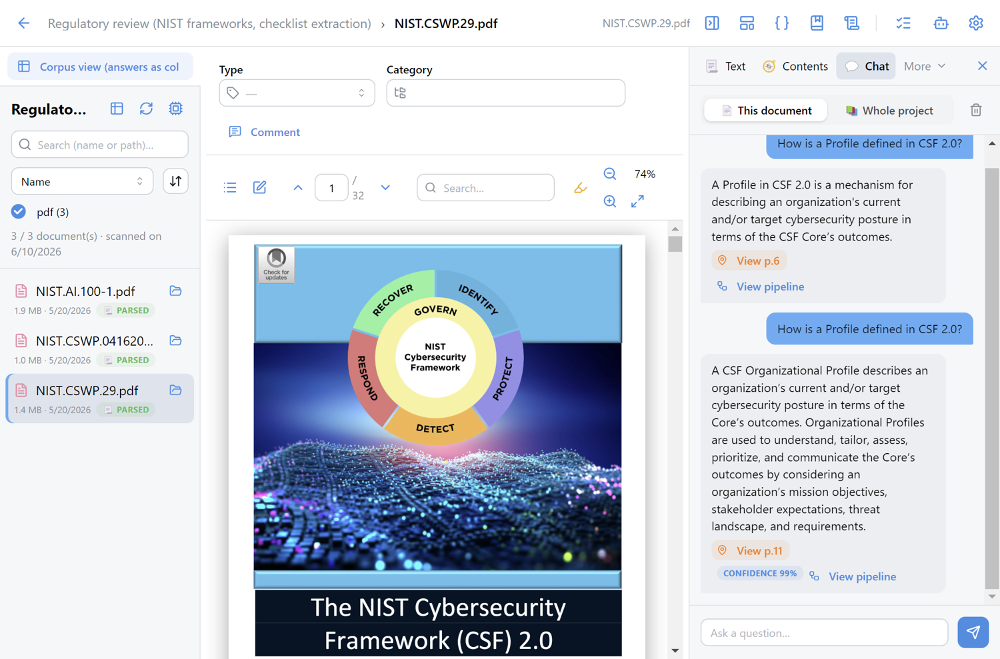
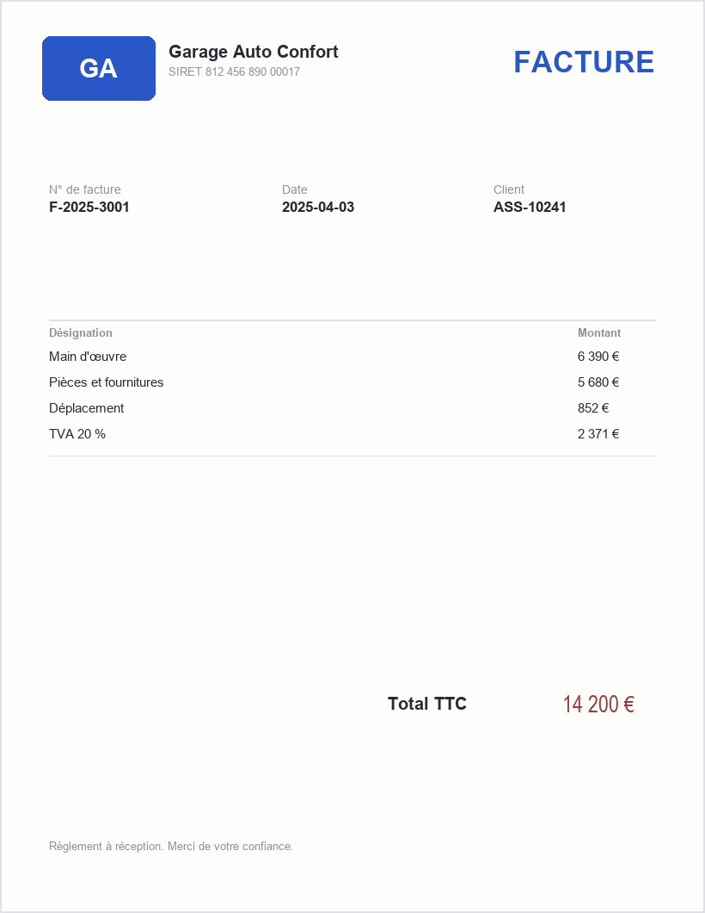

Comprendre un processus métier de bout en bout, puis montrer un écran
Pour un métier donné, les mêmes tâches reviennent chaque jour. Le point de départ d'un outil n'est pas la technique, c'est le processus : qui fait quoi, avec quelles données, quelle décision à la fin. Et la méthode qui marche est contre-intuitive : l'écran d'abord. Un métier ne réagit pas à une spécification, il réagit à un écran.
Pourquoi le prototype d'abord
Trois jours de prototype contre trois mois de projet : on peut dire non sans drame, et on découvre les vrais besoins en regardant les gens l'utiliser.
Traduire un geste métier en écran. L'IA écrit le code ; vous portez l'intention et la vérification.
Un prototype qui devient la production sans passer par les spécialistes est le piège classique. Il sert à prouver la valeur et à cadrer.
Les experts de vingt ans savent, mais n'ont jamais écrit. L'écran fait parler : « non, là il manque le cas où… ».
La méthode, en huit étapes
- Le besoin métier, en une phrase
Quelle décision, quel gain, pour qui.
- Les données : où elles sont, dans quel état
L'organisation des données préfigure la moitié du projet.
- Le geste manuel, décomposé
Comment je ferais à la main ? Chaque étape devient une brique.
- Le prototype, en quelques jours
Un écran, des données réelles anonymisées, des retours.
- La mesure
Taux de réussite, temps gagné, taux de revue humaine.
- Le cadrage avec les spécialistes
Sécurité, données personnelles, intégration.
- La construction
Par l'équipe qui saura la maintenir.
- La production supervisée
Avec ses indicateurs, sa boucle de retour, sa revue.
Les organisations qui avancent suivent le même chemin. Étape 1 : un magasin de petits outils indépendants, rapides à produire, chacun avec son retour intégré. Étape 2 : l'IA entre dans le processus métier existant, là où le petit outil a prouvé sa valeur. Étape 3 : une application unifiée, un module par cas d'usage. Le générique (l'assistant de tous) et le spécifique (l'outil du métier) ne s'excluent pas : on garde les deux.
Des skills, sans interface : l'agent les utilise pour résoudre mon problème
Le prototype le plus léger n'a pas d'écran. C'est une compétence réutilisable que je décris à un agent : comment extraire les champs d'un constat, comment classer un mail, comment vérifier la cohérence d'une facture. Je garde ces skills, et l'agent les enchaîne. Sauvegarder ses bons prompts, c'est déjà construire des outils.
Sous le capot : le function calling
Un outil = une fonction avec un nom, une description et des paramètres. Le développeur expose un catalogue ; le modèle lit l'intention et choisit la fonction à appeler, avec les bons arguments. C'est exactement ce que fait « utilise Python » au module 01, généralisé.
Avec un millier d'outils, envoyer toute la liste à chaque demande ne marche plus : on pré-sélectionne les outils pertinents avant d'appeler le modèle. C'est une recherche, comme pour les documents.
Les deux briques qui suffisent à presque tout
Avec une sortie structurée : on impose un schéma JSON, et le modèle devient un composant logiciel fiable (un montant est un nombre, une date est une date).
Pour comparer, chercher, regrouper. Calculés une fois, stockés, comparés pour presque rien.
Tout le reste (RAG, extraction, comparaison, agents) est de l'assemblage de ces deux appels avec du code classique autour.
Prenez la tâche notée au module 03. Écrivez le prompt qui la fait, avec un exemple d'entrée et le format de sortie attendu (un JSON de trois ou quatre champs). Testez-le sur cinq cas réels anonymisés. Notez les deux vérifications que vous faites toujours à la main : ce sont les lignes de code déterministe à ajouter. Vous avez un skill.
Un outil avec interface, du plus global au plus granulaire
Quand plusieurs personnes doivent l'utiliser, il faut une interface, une base, des règles. Voici des prototypes réalisés, sur des données fictives, qui vont du plus ambitieux au plus ciblé. Chacun est une combinaison des briques vues jusqu'ici.



Le plus granulaire : une facture, un contrôle
Une facture de garage, synthétique, comme en reçoit un service sinistres. Le prototype de fraude documentaire ne « détecte pas la fraude » : il applique des contrôles nommés (total cohérent avec les lignes, SIRET existant, artisan identique au devis, tampon plausible) et produit un dossier scoré avec les motifs et la zone du document.

Comment ces outils sont construits : trois couches, une règle
L'échelle d'exposition : à qui montre-t-on l'outil ?
- Plateforme interne, équipe restreinte
Hallucinations tolérables, humain dans la boucle, on apprend.
- Outil des gestionnaires
Sortie structurée, sources citées, revue par exception.
- Espace client authentifié
Périmètre fermé, refus propre du hors-sujet, escalade humaine.
- Site public
Le niveau le plus exigeant : garde-fous, tests adverses, responsabilité de marque.
La robustesse exigée croît à chaque marche. On monte une marche à la fois.
Le magasin d'outils, par verbe
Une trentaine de petits outils rangés en six verbes suffisent à couvrir un service : questionner un document, extraire, comparer, transformer, contrôler, et les outils pour développeurs. Chacun a une vue utilisateur et une vue « voir le détail » qui montre le pipeline.
Le gain s'évapore si l'utilisateur doit « décrocher » pour vérifier. Voir OK ou KO sans changer d'onglet, ne relire que ce que le score de confiance signale : c'est ce qui fait qu'un outil est adopté.
Le spectre du chatbot : deux extrêmes, et la troisième voie
Un assureur qui veut « un chatbot » a aujourd'hui deux options symétriques, et également mauvaises. La troisième est celle que tous les prototypes ci-dessus appliquent.
Le prompt nu
On branche un modèle en direct sur le site. L'utilisateur tape « donne-moi un code », le bot répond n'importe quoi, sans source, sans garantie. Rapide à mettre en place, impossible à défendre.
L'arbre déterministe
Le chatbot scripté classique : rigide, qui ne comprend rien hors de son arbre de décision. Prévisible, mais il casse à la première formulation imprévue.
Le dispatcher au-dessus de briques typées
Un assistant qui détecte l'intention, route vers le bon workflow, et justifie ses réponses contre un document officiel. Ni le prompt nu, ni l'arbre figé.
Cinq archétypes, et chaque cas en combine plusieurs
question sur un document, réponse justifiée à la ligne. Lecture seule.
remplir un formulaire ou produire un document : l'attestation, la déclaration.
document → champs typés avec leur source : KBIS, constat, facture. Le verbe le plus fréquent.
détecte l'intention et route vers le bon workflow. Le noyau du chatbot unifié.
vérifie la sortie d'une IA contre le document. La parade à l'hallucination.
Le substrat : la GED 2.0, vers la vision 360
La gestion documentaire classique stocke et retrouve des documents. La nouvelle génération ingère tout, documents et mails, et en fait un contexte typé et interrogeable, rattaché au client. C'est ce contexte qui ancre chaque chatbot du parcours, et qui alimente la fiche 360 vue plus haut.
Deux entrées transversales pour la suite : la voix (transcrire un appel ou un échange en agence et faire remonter les bons éléments du contrat) et le local (un modèle qui tourne sur place quand la donnée ne doit pas sortir).
Un prospect artisan arrive sur le site et veut une responsabilité civile professionnelle. Décrivez l'outil en trois écrans : (1) la conversation qui recueille l'activité en langage libre et la classe (fil rouge du module 03) ; (2) la fiche pré-remplie que le prospect corrige, avec les pièces demandées ; (3) l'écran du gestionnaire qui reçoit le dossier, avec les champs à vérifier. Pour chaque écran, dites quel archétype il combine (réponse, action, extraction, dispatcher, validation) et listez les briques : quelle règle, quel dictionnaire, quel appel au modèle, quelle sortie structurée. Puis demandez à un assistant de code de générer l'écran 1. Une demi-journée suffit pour un premier prototype.
La file de tri : l'écran, les seuils, la mesure
Le module 03 a déroulé les techniques pour classer un mail. Ici on en fait un outil que des gestionnaires utilisent tous les matins. Trois choses à concevoir : l'écran, la règle de décision par famille, et ce qu'on mesure avant de laisser l'outil agir seul.
L'écran, tel qu'un gestionnaire le voudrait
Pas un chat : une file de tri. À gauche les mails, au centre le mail ouvert avec ses mots reconnus surlignés, à droite la famille proposée, la confiance, et deux boutons : valider, corriger. Les mails sûrs partent seuls ; l'écran ne montre que ceux qui méritent un regard. C'est l'UX par exception.
En une demi-journée avec un assistant de code : le dictionnaire dans un fichier, la file dans une page, les corrections dans une table. La démonstration du module 03 en est le squelette.
Ce qu'on mesure avant d'automatiser
sur un échantillon relu à la main. Certaines familles sont faciles, d'autres non ; un chiffre global cache tout.
s'il dépasse ce que le service absorbe, on baisse le seuil sur les familles peu risquées, ou on améliore le dictionnaire.
un service qui pensait recevoir 6 000 mails par an en comptait 33 000. Mesurer d'abord, c'est souvent la première surprise du projet.
pourquoi le modèle s'est trompé, produit par l'équipe technique ; le métier dit ensuite lesquelles traiter en priorité.
La règle de décision, par famille
Le seuil est un choix du service, famille par famille. Les chiffres se fixent sur l'historique, avec plusieurs scénarios : pour chaque seuil, un taux d'automatisation et un taux d'erreur.
| Famille | Criticité d'une erreur | Seuil | Action si le modèle est sûr |
|---|---|---|---|
| Changement d'adresse | Faible, format fixe | Bas | Traitement automatique |
| Demande d'attestation | Faible | Bas | Réponse automatique |
| Sinistre | Élevée : un délai coûte | Haut | Routage seulement, réponse humaine |
| Plusieurs clients ou agents | Très élevée | Hors modèle | Toujours manuel |
Le déploiement, une famille à la fois
- La famille la plus volumineuse et la moins risquée
le changement d'adresse : gros volume, format fixe, erreur bénigne.
- Puis le pic saisonnier
la demande de certificat de janvier, quand tout le monde écrit en même temps.
- Puis famille par famille
chacune entraînée puis automatisée séparément, jamais un basculement d'ensemble.
- Et une documentation de bout en bout
de l'arrivée du mail à l'action déclenchée : personne ne l'avait, chaque équipe documentait sa partie.
Prenez vingt mails réels anonymisés de votre service. Listez les familles, puis pour chacune les cinq mots ou expressions qui la trahissent, et la criticité d'une erreur. Classez les vingt mails avec cette liste, à la main : combien sont sans ambiguïté ? Ceux qui restent sont exactement les cas pour lesquels un modèle se justifie. Vous avez le cadrage, le dictionnaire de départ, l'échantillon de test et la table des seuils.
Ce qu'un prototype n'est pas : sécurité, normes, industrialisation
Un prototype prouve la valeur et cadre le projet. Il ne protège pas les données, ne respecte pas seul les normes, ne tient pas la charge, ne se maintient pas. Ces sujets restent un métier de spécialiste. Voici ce qu'il faut savoir pour dialoguer avec eux et passer la main proprement.
Le vrai danger n'est pas le modèle
Un modèle est un fichier de nombres qui transforme du texte en texte : inerte. Le danger apparaît quand sa sortie est exécutée automatiquement avec de mauvais droits. D'où le critère central de tout déploiement : le degré de contrôle, du plus prudent au plus dangereux.
- Demander avant chaque actionpar défaut
L'humain valide tout.
- Proposer un plantâches bornées
L'humain valide le plan, l'agent exécute.
- Agir seulaprès mesure
L'agent enchaîne sans validation.
- Contourner les garde-fousà interdire
Aucune limite. Ce mode existe dans les outils, il ne doit pas exister chez vous.
Ce que les spécialistes mettent en place
Une clé par projet, journalisation de chaque appel, budget plafonné, revue trimestrielle.
Pour toute réponse : quel document, quel passage, quel modèle, quel prompt. Sans ça, pas d'audit possible.
Donnée confidentielle → modèle ouvert sur une machine dédiée (chez vous ou dans un cloud souverain). Donnée non confidentielle → API du marché, en région européenne, sans réentraînement.
Détection de secrets dans le code, inventaire des dépendances, analyse de vulnérabilités, environnements de test avant production.
| Le cadre | Ce qu'il impose à un outil IA | Ce que ça change dans le prototype |
|---|---|---|
| RGPD | Minimisation, finalité, droit d'accès ; pas de donnée personnelle vers un modèle externe sans base légale | Anonymiser avant l'appel, avec une cascade déterministe auditable (module 02) |
| AI Act | Classification par niveau de risque ; transparence ; supervision humaine pour les usages à risque | Documenter l'usage, garder l'humain dans la décision qui affecte un assuré |
| Droit à l'explication | Un assuré peut demander pourquoi une décision le concernant a été prise | Toujours montrer les motifs et la source, jamais un score seul |
| DORA, résilience | Continuité, dépendance aux fournisseurs, réversibilité | Pouvoir changer de modèle sans réécrire l'outil : les trois couches |
Le product owner métier
Porte le besoin, le processus, les critères d'acceptation. C'est vous, après cette formation : celui qui prototype et cadre.
Le data scientist, l'ingénieur IA
Choisissent les briques, mesurent, industrialisent le package. Ils reprennent votre prototype, ils ne repartent pas de zéro s'il respecte les trois couches.
L'IT, la sécurité, le DPO
Fournissent le contenant : hébergement, accès, passerelle, conformité. Les impliquer tôt, avec un écran à montrer, change tout.
Le bon moment pour passer la main est le moment où le prototype a prouvé quelque chose : un taux d'extraction, un temps gagné, un besoin confirmé par ceux qui l'ont utilisé. Vous arrivez alors avec un écran, des mesures, des cas réels et une liste de ce qui reste à faire. C'est le cadrage dont les spécialistes ont besoin, et c'est ce qui fait qu'un projet passe du POC à la production.
Quatre messages, un par module
Du premier prompt au prototype, un fil : l'IA générative au service du besoin métier, jamais en boîte noire.
- Je découvre : le moteur anticipe, les outils exécutent.
Le LLM prédit du texte, il ne sait pas et ne calcule pas. Sa fiabilité vient de sa combinaison avec des outils déterministes. Bien prompter, c'est cadrer.
- Je comprends : la technique la plus simple qui marche.
Des mots-clés aux Transformers, chaque rupture lève une limite sans remplacer la précédente. Le LLM n'est pas toujours nécessaire ; le dictionnaire du métier sait des choses que le générique ignore.
- J'applique : l'IA à trois endroits, et le document partout.
Pour réfléchir, pour créer l'outil, dans l'outil ou pas. La chaîne de valeur donne le plan, et l'analyse documentaire est l'entrée de presque tout.
- Je prototype : l'écran d'abord, sans construire seul.
Des skills, puis un outil en trois couches, une file de tri avec ses seuils. Puis passer la main aux spécialistes, avec des mesures. La sécurité se règle autour du modèle, pas dedans.
Cinq réflexes qui valent quel que soit le modèle du moment
Comment je ferais à la main ?
La question qui décompose une tâche en briques, et qui révèle celles qui n'ont pas besoin d'IA.
Partir du bas de l'échelle
Regex, dictionnaire, ML classique, embeddings, puis seulement le LLM. Monter quand ça plafonne.
Une source pour chaque réponse
Pas de chiffre sans page, pas de décision sans motif. Ce qui n'est pas traçable n'est pas déployable.
Mesurer avant d'automatiser
Un taux, un temps, un groupe témoin. Le mode « agir seul » se mérite.
L'humain garde la main
Sur la décision qui touche un assuré, sur l'action irréversible, sur le seuil de faux positifs. C'est un choix métier.
Le vrai frein, c'est la pratique
Ni l'outil ni la technique : le temps d'expérimenter, l'habitude de vérifier, le courage de prototyper. Commencez cette semaine.